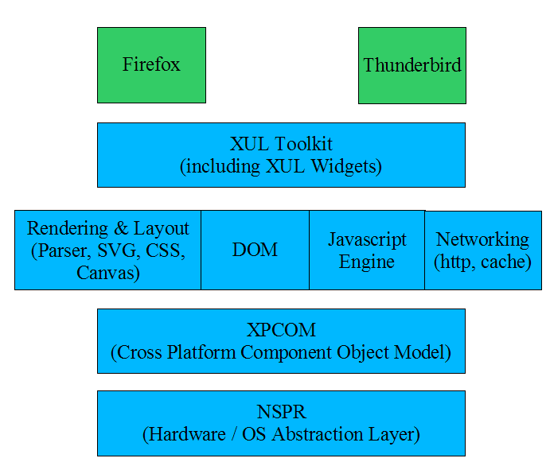
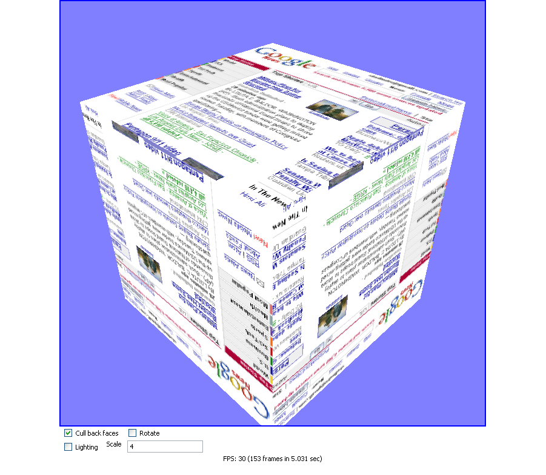
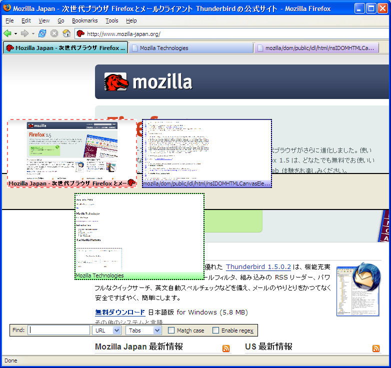

Mozilla Technologies
Scott MacGregor
Introduction
Gecko Overview
XUL
Using XBL to Extend XUL
SVG
Canvas
The Reveal Extension
What Is Gecko
The Mozilla Platform
Standards Compliant Web Layout Engine
HTML 4.0, XHTML 1.1, XML 1.0, MathML
CSS
DOM
SVG
Canvas
XForms
Networking Module (http, ftp, cache)
Javascript Engine
Renders Application UI (XUL, XBL)
Gecko Overview

At the bottom, we have
The core components of gecko
XUL Runner
At the top of the stack, the application layer: Thunderbird and Firefox
Gecko Versions
Separate Version Scheme
Web Developers and Gecko Versions
Thunderbird and Firefox 2 based on Gecko 1.8.1
Thunderbird and Firefox 3 based on Gecko 1.9
Future Gecko Goals
Enable next generation web content without requiring proprietary plugins like Flash
Empowering Web 2.0 Applications (AJAX)
Make it easy to build applications using the Mozilla Platform
Gecko 1.9
Graphics, Graphics, Graphics
Graphics Back End powered by Cairo
Modern Hardware-Accelerated Graphics
SVG
Canvas
JavaScript 2
Improving Web Applications
Client-local storage
Offline
XUL and XBL 2.0 Improvements
XUL Runner
What is XUL?
XML User Interface Language
A powerful language that lets quickly develop client software
Used by Firefox, Thunderbird and other projects
History
XUL Features
XML syntax
Rich toolkit of XUL widgets
Leverages Mozilla Platform Services: networking, file I/O, XMLHttpRequest, etc
Cross Platform UI
Scripting via Javascript
Accessibility
Localizability
Easy to learn (web developers who can do DHTML can write XUL)
Mature Toolkit, deployed to millions of users.
XUL Example II
<?xml version="1.0"?>
<?xml-stylesheet href="chrome://global/skin"?>
<window id="simpleTest"
xmlns="http://www.mozilla.org/keymaster/gatekeeper/there.is.only.xul"
title="A Simple XUL Test">
<script type="application/x-javascript" src="example.js"/>
<vbox flex="1">
<listbox id="itemList" flex="1">
<listitem label="Item 1"/>
<listitem label="Item 2"/>
</listbox>
<hbox>
<textbox id="labelField" flex="1" oninput="validateUserInput();"/>
<button id="addButton" label="Add Item"
disabled="true" oncommand="addItem();"/>
</hbox>
</vbox>
</window>
XUL Example Continued III
function validateUserInput()
{
// enable the add button if we have valid text
if (document.getElementById('labelField').value)
document.getElementById("addButton").disabled = false;
}
function addItem()
{
// create a new listitem and add it to the list box
var textInputField = document.getElementById('labelField');
document.getElementById("itemList").appendItem(textInputField.value);
textInputField.value = ""; // clear the text box
document.getElementById("addButton").disabled = true;
}
Extending XUL with XBL
Extensible Binding Language
Create new XUL widgets in terms of existing ones
Many XUL widgets are written in XBL using basic XUL Elements
Associate methods and properties with the binding
Consider a XUL button:
What is a XUL Button?
<binding id="button">
<resources>
<stylesheet src="chrome://global/skin/button.css"/>
</resources>
<content>
<xul:hbox>
<children>
<xul:image class="button-icon" xbl:inherits="src=image"/>
<xul:label class="button-text" xbl:inherits="value=label,accesskey,crop"/>
</children>
</xul:hbox>
</content>
</binding>
What Is a XUL Button?
A little bit of CSS:
button {
-moz-binding: url("chrome://global/content/bindings/button.xml#button");
}
Back to our Example:
<button label="Click Me!" image="chrome://browser/skin/Throbber-small.png"/>
Scalable Vector Graphics
W3C standard XML Vocabulary for vector graphics
Elements: rect, circle, etc
Styleable via CSS
Part of the DOM
Event Handling is easy
SVG Status in Gecko
Support in Firefox 1.5 at SVG 1.1 level:
Shapes, paths, transforms, clipping
Gradients and Images
Basic text
Scripting and CSS Styling
Firefox 3 and Beyond
filters
text pathing
foreign object
SVG Example
<g transform="translate(250,150)">
<g transform="translate(-82,0)">
<rect id="square" fill="red" x="-40" y="-40" width="80" height="80"
onmousedown="doMouseDown(evt)"/>
</g >
<g transform="translate(82,0)">
<circle id="circle" fill="blue" cx="0" cy="0" r="40"
onmousedown="doMouseDown(evt)"/>
</g >
<g transform="translate(0,0)">
<polygon id="triangle" fill="green" points="-40,40 0,-40 40,40"
onmousedown="doMouseDown(evt)"/>
</g >
</g >
Most content is specified through markup; can use CSS to style
High level primitives such as circles, rects; generic polygons
Event handling on individual elements through normal event mechanisms "for free"
SVG Limitations
Difficult to do data driven rendering (must manipulate the DOM)
Difficult to write by hand
Complicated Specification
Canvas
Modern 2D Graphics API for script to draw into
HTML element, can be used by XUL Applications and Web Developers
Supported in Firefox, Safari, Opera and others
No Document Object Model (DOM)
Originally introduced by Apple in Safari
Canvas is a programmable img element
Gives a surface with a specified size to draw into
Part of the WHATWG Web Apps Spec
<canvas> 2D
var ctx = canvas.getContext("2d ");
with (ctx) {
translate (canvas.width / 2, canvas.height / 2);
save (); translate (-82, 0);
fillStyle = "red ";
fillRect (-40, -40, 80, 80);
restore ();
save (); translate (0, 0);
fillStyle = "green ";
beginPath ();
moveTo (-40, 40);
lineTo (0, -40);
lineTo (40, 40);
fill (); restore ();
save (); translate (82, 0);
fillStyle = "blue ";
arc (0, 0, 40, 0, 2 * Math.PI, false);
fill (); restore ();
}
Canvas supports multiple contexts; first one is for 2D drawing
Fully programmatic API for drawing; the only element in the page markup is canvas
Supports 2D affine transforms (scaling, translation, rotation)
Core operation is path strokes/fills
Path build-up uses commands similar to PostScript (moveto, lineto, arc, closepath)
<canvas> 2D: Patterns
var pat = ctx.createPattern(img, "repeat ");
with (ctx) {
fillStyle = pat;
beginPath (); // triangle
moveTo (10, 90);
lineTo (50, 10);
lineTo (90, 90);
lineTo (10, 90);
stroke ();
rotate (Math.PI/4);
scale (.2, .2);
fill ();
}
Drawing images
Single images using drawImage
Resuable patterns using createPattern (including image and gradient patterns)
canvases can be used as images!
offscreen images
<canvas> 2D: Animation
with (ctx) {
var pat = createPattern (img, "repeat ");
fillStyle = pat;
triangle (ctx); // create our triangle path
stroke ();
setInterval (function () {
// fill with transparent white, to fade out
ctx.fillStyle = "rgba(255, 255, 255, 0.5) ";
ctx.fill ();
// rotate and fill with our pattern
ctx.rotate (Math.PI/20);
ctx.fillStyle = pat;
ctx.fill ();
}, 100);
}
Animation in canvas is done through DOM timers, just like DHTML
You redraw the scene (or portion of the scene) that needs to animate
In this example, fade out using a transparent white wash
Then redraw using a new rotation
Canvas Limitations
No direct text rendering support
No DOM Presence
Must redraw to make a change
But drawing is quick
<canvas> Examples: 3D
3D Canvas Context
3D Canvas Context
drawWindow to create a texture from a web page
The Reveal Extension

Breaking down Reveal
Tab Preview Widget
<vbox>
<html:canvas id="previewCanvas"/>
<label id="previewLabel" crop="end"/>
</vbox>
Drawing the Tab Preview
var ctx = canvas.getContext("2d");
ctx.save();
ctx.scale(x/width, y/height);
// this.browser.contentWindow is the content window
// for the current tab. We're going to draw that tab onto
// our canvas, scaling it down to the width and height
// of our canvas element.
ctx.drawWindow(this.browser.contentWindow,
sleft, stop, width, height, "rgb(255,0,255)");
ctx.restore();
In Summary
Exciting Things Ahead for Gecko and open standards on the web
Empowering Web Developers (SVG, Canvas)
Empowering AJAX Web Applications
Empowering Application Development (XUL Runner)
Questions
Questions and Answers
Resources and Acknowledgments
Additional Resources:
Thanks To:
Ben Goodger
Vladimir Vukićević
Robert O'Callahan
Michael Vu: Extension Author for Reveal